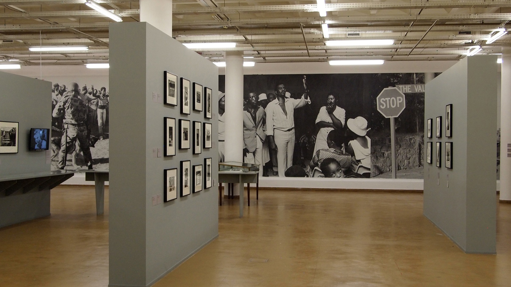

Chadrack kavula Mulamba
Which City ?
Japan

Japan is a captivating blend of ancient tradition and cutting-edge modernity, where serene temples nestle alongside towering skyscrapers. Its rich cultural tapestry is woven with graceful arts like tea ceremonies, Ikebana (flower arranging), and the meditative practices of Zen Buddhism. From the bustling streets of Tokyo to the serene landscapes of Kyoto, Japan offers a unique harmony of innovation and reverence for its heritage. Its cuisine, from delicate sushi to hearty ramen, delights palates worldwide, reflecting a meticulous attention to detail and quality. With its warm hospitality and deep respect for nature, Japan invites visitors to experience a journey that seamlessly merges the past with the future.
Spanish
Spanish, a language born from the romance of the Iberian Peninsula, now embraces over 580 million speakers worldwide. Its melodic cadence echoes through vibrant cultures from Spain to Latin America, weaving together rich literature, music, and art. Spanish invites exploration of diverse traditions, offering a doorway to passion, creativity, and global connectivity.
| English | Spanish |
|---|---|
| Hello, how are you? | Hola, ¿cómo estás? |
| Thank you very much. | Muchas gracias. |
| Where is the nearest restaurant? | ¿Dónde está el restaurante más cercano? |
| I love you. | Te quiero |
| Have a nice day! | ¡Que tengas un buen día! |
Bcoms Hons in Information Systems ~ University Of Johannesburg
Favourite Subjects
Full Stack Web Development

Agile Rapid Skills Acquisition
4IR Technologies Bootcamp
Historical Places
Apartheid Museum
It has interactive displays with artifacts and first-hand stories. The architecture of the museum represents the effects of the apartheid system. Different racial groups can enter through different entrances.
Johannesburg Heritage Foundation
 The JHF is
dedicated to programs that raise public awareness and engage the educational
community.
The JHF is
dedicated to programs that raise public awareness and engage the educational
community.
Johannesburg Constitution Hill
 Constitution
Hill was changed into a representation of democracy and human rights
following the end of apartheid. It offers guided tours, museums, and exhibitions.
Constitution
Hill was changed into a representation of democracy and human rights
following the end of apartheid. It offers guided tours, museums, and exhibitions.